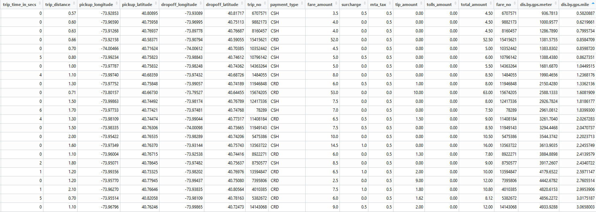

Summary
- Data cleaning is a cumbersome but important task for Data Science project in reality.
- This is a discussion on my practice of data cleaning for NYC Taxi Trip data.
- There are lots of domain knowledge, common sense and business thinking involved.
Data Cleaning, the unavoidable, time consuming, cumbersome nontrivial task
Data Science may sound fancy, but I saw many posts/blogs of data scientists complaining that much of their time were spending on data cleaning. From my own experience on several learning/volunteer projects, this step do require lots of time and much attention to details. However I often felt the abnormal or wrong data are actually more interesting. There must be some explanations behind the error, and that could be some interesting stories. Every time after I filtered some data with errors, I can have better understanding of the whole picture and estimate of the information content of the data set.
NYC Taxi Trip Data
One good example is the the NYC Taxi Trip Data.
By the way, this analysis and exploration is pretty impressive. I think it’s partly because the author is NYC native and already have lots of possible pattern ideas in mind. For same reason I like to explore my local area of any national data to gain more understandings from the data. Besides, it turned out that you don’t even need a base map layer for the taxi pickup point map when you have enough data points. The pickup points themselves shaped all the streets and roads!
First I prepared and merged the two data file, trip data and trip fare.
|
Then I found many obvious data errors.
Some columns have obvious wrong values, like zero passenger count.
Though the other columns look perfectly normal. As long as you are not using passenger count information, I think these rows are still valid.
Another interesting phenomenon is the super short trip:
short = trip.all[trip_time_in_secs <10][order(total_amount)] |
One possible explanation I can imagine is that maybe some passengers get on taxi then get off immediately, so the time and distance is near zero and they paid the minimal fare of $2.5. Many rows do have zero for pickup or drop off location or almost same location for pick up and drop off.
Then how is the longer trip distance possible? Especially when most pick up and drop off coordinates are either zero or same location. Even if the taxi was stuck in traffic so there is no location change and trip distance recorded by the taximeter, the less than 10 seconds trip time still cannot be explained.
- There are also quite some big value trip fares for very short trips. Most of them have pick up and drop off coordinates at zero or at same locations.
I don’t have good explanations for these phenomenon and I don’t want to make too many assumptions since I’m not really familiar with NYC taxi trips. I guess a NYC local probably can give some insights on them, and we can verify them with data.
Average driving speed
We can further verify the trip time/distance combination by checking the average driving speed. The near zero time or distance could cause too much variance in calculated driving speed. Considering the possible input error in time and distance, we can round up the time in seconds to minutes before calculating driving speed.
First check on the records that have very short time and nontrivial trip distance:
|
If the pick up and drop off coordinates are not empty, we can calculate the great-circle distance between the coordinates. The actual trip distance must be equal or bigger than this distance.
|
If both the great-circle distance and trip distance are nontrivial, it’s more likely the less than 10 seconds trip time are wrong.
|
And there must be something wrong if the great-circle distance is much bigger than the trip distance. Note the data here is limited to the short trip time subset, but this type of error can happen in all records.

Either the taximeter had some errors in reporting trip distance, or the gps coordinates were wrong. Because all the trip time very short, I think it’s more likely to be the problem with gps coordinates. And the time and distance measurement should be much simpler and reliable than the gps coordinates measurement.
gps coordinates distribution
We can further check the accuracy of the gps coordinates by matching with NYC boundary. The code below is a simplified method which take center of NYC area then add 100 miles in four directions as the boundary. More sophisticated way is to use a shapefile, but it will be much slower in checking data points. Since the taxi trip actually can have at least one end outside of NYC area, I don’t think we need to be too strict on NYC area boundary.
|
I found another verification on gps coordinates when I was checking the trips started from the JFK airport. Note I used two reference points in JFK airport to better filter all the trips that originated from inside the airport and the immediate neighborhood of JFK exit.
|
Interestingly, there are some pick up points in the airplane runway or the bay. These are obvious errors, actually I think gps coorindates report in big city could have all kinds of error.
Superman taxi driver
I also found some interesting records in checking taxi driver revenue.
|
Min. 1st Qu. Median Mean 3rd Qu. Max. |
Who are these superman taxi driver that earned significantly more?
|
hack_license revenue.march |
|
So this driver were using different medallion with same hack license, picked up 1412 rides in March, some rides even started before last end(No.17, 18, 22 etc). The simplest explanation is that these records are not from one single driver.
|
hack_license N |
These hack license owner picked up more than 1500 rides in March, that’s 50 per day.
We can further check if there is any time overlap between drop off and next pickup, or if the pick up location was too far from last drop off location, but I think there is no need to do that before I have better theory.
Summary
In this case I didn’t dig too much yet because I’m not really familiar with NYC taxi, but there are lots of interesting phenomenons already. We can know a lot about the quality of certain data fields from these errors.
In my other project, data cleaning is not just about digging interesting stories. It actually helped with the data process a lot. See more details in my next post.
Version History
- 2016-01-31 : First version.
- 2016-05-11 : Added Summary.